Техника высоких напряжений
Лекция 1
Электрическое поле в изоляционных промежутках
Напряжённость поля, степень неоднородности и её зависимость от формы электродов
Цель лекции. Сформировать понятия напряжённости электрического поля и коэффициента неоднородности; показать, как форма электродов, радиус кривизны, расстояние и схема подключения (заземление) влияют на наибольшую напряжённость; научиться оценивать Emax по инженерным формулам и сравнивать её с электрической прочностью воздуха. Учебные вопросы. 1) Напряжённость и потенциал. 2) Однородное и неоднородное поле, коэффициент неоднородности. 3) Радиус кривизны и усиление поля. 4) Типовые системы электродов и расчётные формулы. 5) Влияние заземления, плавающие электроды, полярность. 6) Способы снижения неоднородности. 7) Демонстрационные опыты на 3D-модели «Электроды 3D». Связанные материалы. Интерактивная модель «Электроды 3D» (вкладки «Эксперимент», «Задачи», «Тест»), практическое занятие № 1, чек-лист для студентов. |
1. Зачем изучать электрическое поле в изоляции
Любая высоковольтная конструкция — это электроды (проводники под разными потенциалами) и изоляция между ними: воздух, газ, масло, твёрдый диэлектрик. Изоляция работает, пока напряжённость электрического поля в ней меньше её электрической прочности. Пробой начинается не там, где поле «в среднем» велико, а там, где оно максимально. Поэтому главная задача расчёта поля в технике высоких напряжений — найти наибольшую напряжённость Emax и место, где она возникает.
Одно и то же напряжение может быть безопасным или опасным в зависимости от формы электродов. Заусенец на шине, острый угол арматуры, тонкий провод — всё это места концентрации поля. Понимание того, от чего зависит Emax, — основа проектирования изоляции и всех следующих тем курса: разрядов в газах, короны, пробоя жидкой и твёрдой изоляции.
2. Напряжённость и потенциал
2.1. Определения
Напряжённость электрического поля E — векторная величина, равная силе, с которой поле действует на неподвижный единичный положительный заряд:
(1)
Единица СИ — В/м. В технике высоких напряжений удобнее кВ/см: 1 кВ/см = 100 кВ/м = 0,1 кВ/мм. Направление вектора E совпадает с направлением силы на положительный заряд — от электрода с большим потенциалом к электроду с меньшим.
Потенциал φ — энергия единичного заряда в данной точке поля относительно точки с нулевым потенциалом (в технике — относительно земли). Напряжение между электродами — разность их потенциалов, U = φ1 − φ2. Напряжённость связана с потенциалом: она направлена в сторону наибыстрейшего убывания потенциала и численно равна скорости этого убывания:
(2)
Напряжение между электродами равно интегралу напряжённости вдоль любого пути от одного электрода к другому, например вдоль оси промежутка:
(3)
Геометрический смысл формулы (3): площадь под графиком E(x) вдоль оси промежутка равна приложенному напряжению. Если поле где-то сгущается (E велика), то в другом месте промежутка оно должно быть слабее — площадь остаётся постоянной.
2.2. Наглядное изображение поля
Силовая линия — линия, касательная к которой в каждой точке совпадает с направлением вектора E. Силовые линии начинаются на положительных зарядах (электроде «+») и заканчиваются на отрицательных (электроде «−» или земле). Чем гуще силовые линии, тем сильнее поле.
Эквипотенциальная поверхность (в разрезе — эквипотенциаль) — поверхность одинакового потенциала. Силовые линии всегда перпендикулярны эквипотенциалям. Поверхность металлического электрода сама является эквипотенциалью, поэтому вектор E у поверхности проводника перпендикулярен ей, а внутри проводника в электростатике E = 0.
Чем ближе друг к другу эквипотенциали, проведённые через равные интервалы потенциала, тем больше напряжённость. В модели «Электроды 3D» эквипотенциали проведены через 10 % приложенного напряжения, а цвет разреза показывает величину E: тёмно-фиолетовый — слабое поле, жёлтый — сильное.
3. Однородное и неоднородное поле
3.1. Однородное поле
Поле называют однородным, если напряжённость одинакова во всех точках по величине и направлению. Практически такое поле существует между двумя большими параллельными плоскими электродами вдали от их краёв. Для него интеграл (3) даёт простейшую формулу:
(4)
где d — расстояние между электродами. Однородное поле — эталон: в нём изоляция используется полностью, каждый слой нагружен одинаково. Чтобы на краях плоских электродов поле не усиливалось, их профиль плавно скругляют (электроды Роговского) — такие электроды применяют в испытательных ячейках для определения электрической прочности материалов.
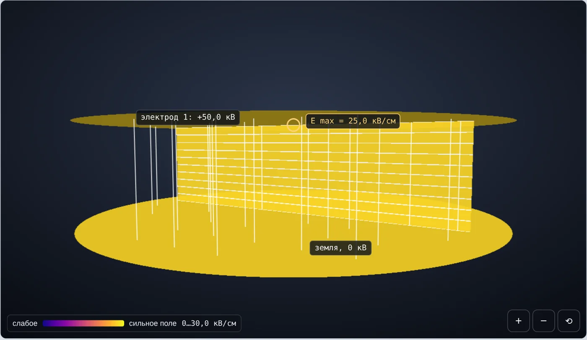
Рис. 1. Плоскость — плоскость, U = 50 кВ, d = 2 см. Разрез окрашен одним цветом, эквипотенциали равноотстоят, силовые линии параллельны: E = 25 кВ/см во всём промежутке
3.2. Неоднородное поле. Коэффициент неоднородности
Если хотя бы один электрод не плоский (шар, цилиндр, острие), поле становится неоднородным: напряжённость максимальна у поверхности электрода с наименьшим радиусом кривизны и убывает по мере удаления от него. Для характеристики такого поля вводят две величины.
Средняя напряжённость — та, что была бы при однородном поле:
(5)
Коэффициент неоднородности — отношение наибольшей напряжённости к средней:
(6)
Для однородного поля kн = 1, для любого неоднородного kн > 1. Важное свойство: kн не зависит от напряжения, только от геометрии системы электродов, — при увеличении U в два раза и Emax, и Eср растут в два раза.
Условная классификация полей, используемая в курсе (границы в учебниках несколько различаются):
| Поле | kн | Пример |
|---|---|---|
| Однородное | = 1 | Плоскость — плоскость |
| Слабонеоднородное | < 2 | Шары при d < r, коаксиальный кабель |
| Неоднородное | 2…4 | Шар — плоскость при d ≈ 2r |
| Резконеоднородное | > 4 | Острие — плоскость, провод над землёй |
Деление важно для дальнейших тем: в слабонеоднородном поле пробой газа наступает практически сразу после начала ионизации, а в резконеоднородном сначала у острого электрода возникает самостоятельный местный разряд — корона, и лишь при большем напряжении — пробой всего промежутка.
3.3. Распределение напряжённости вдоль оси
Наглядно неоднородность видна на графике E(x) вдоль оси промежутка. На рис. 2 — шар радиусом 5 см над заземлённой плоскостью, d = 10 см, U = 100 кВ. Средняя напряжённость 10 кВ/см, у поверхности шара Emax = 26,8 кВ/см, у плоскости — 5,4 кВ/см. Площадь под кривой по-прежнему равна 100 кВ.
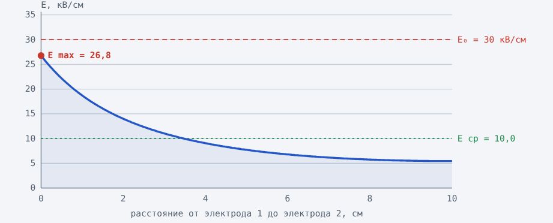
Рис. 2. Напряжённость вдоль оси промежутка шар — плоскость (r = 5 см, d = 10 см, U = 100 кВ). Пунктиры: Eср = 10 кВ/см и E0 = 30 кВ/см
4. Радиус кривизны и усиление поля
Радиус кривизны поверхности в точке — радиус окружности, которая наилучшим образом прилегает к поверхности в этой точке. У плоскости он бесконечен, у шара равен радиусу шара, у острия составляет доли миллиметра. Основная закономерность: чем меньше радиус кривизны электрода, тем больше напряжённость у его поверхности.
Это легко показать на уединённом шаре радиусом r под потенциалом U (второй электрод — бесконечно удалённая «земля»). Поле снаружи шара такое же, как у точечного заряда в его центре:
(7)
где ρ — расстояние от центра шара. При одном и том же потенциале шар радиусом 1 мм имеет у поверхности поле в 100 раз сильнее, чем шар радиусом 10 см. Именно поэтому острые кромки, заусенцы и тонкие провода — главные источники короны и частичных разрядов.
Если вокруг шара есть второй, концентрический заземлённый шар радиусом R = r + d (сферический конденсатор), то
(8)
Формула (8) — основа инженерной оценки для системы шар — плоскость (раздел 5.1).
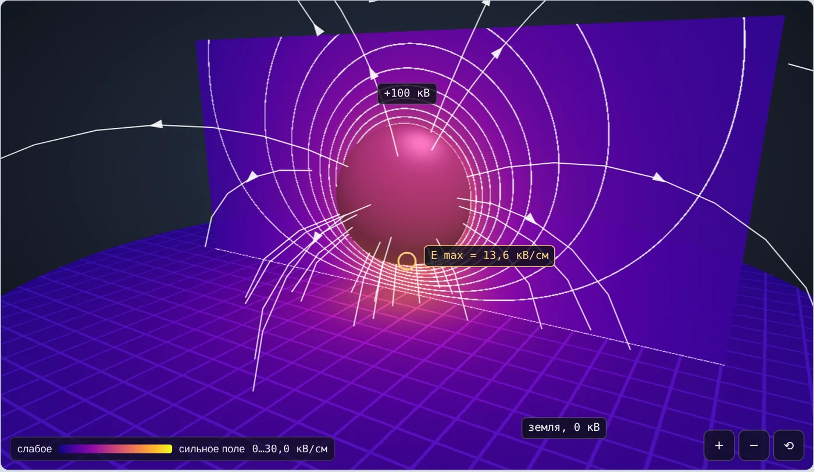
Рис. 3. Шар — плоскость, r = 20 см, d = 10 см, U = 100 кВ: Emax = 13,6 кВ/см, kн = 1,36
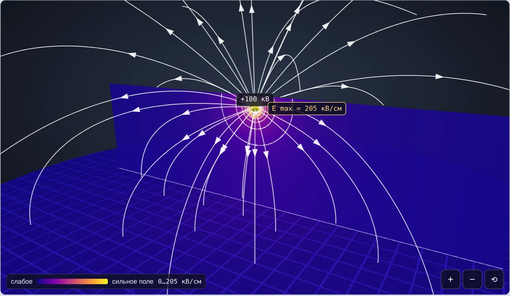
Рис. 4. Тот же промежуток и напряжение, r = 0,5 см: Emax = 205 кВ/см, kн = 20,5. Средняя напряжённость в обоих случаях 10 кВ/см
5. Типовые системы электродов
Для практических расчётов используют несколько типовых систем, для которых известны точные или приближённые формулы. Ниже r — радиус кривизны «острого» электрода, d — расстояние между поверхностями электродов, U — напряжение между ними (в формулах — амплитудное значение).
5.1. Шар — плоскость
Заземлённая плоскость искажает поле шара: силовые линии сгущаются на нижней части шара. Инженерная формула получена поправкой к формуле сферического конденсатора (8):
(9)
Точное решение строят методом зеркальных изображений: заземлённую плоскость заменяют зеркальным шаром с противоположным потенциалом. При d ≤ (5…10)r погрешность формулы (9) не превышает нескольких процентов; при большем удалении шара от плоскости она занижает Emax до 10 %. Пример: r = 5 см, d = 10 см, U = 100 кВ — по (9) получаем 27,0 кВ/см, точный расчёт 26,8 кВ/см (рис. 5).
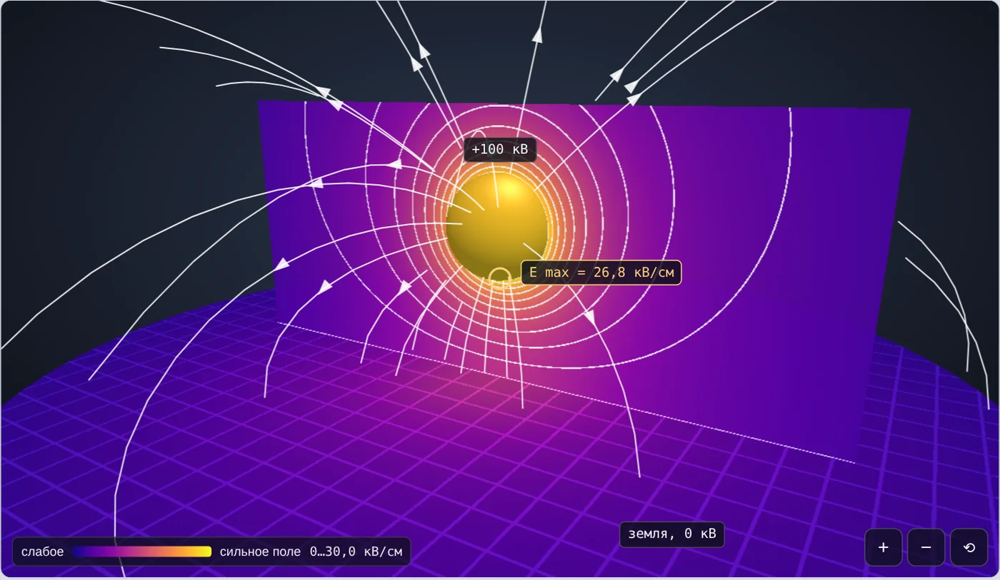
Рис. 5. Шар — плоскость, r = 5 см, d = 10 см, U = 100 кВ. Жёлтое кольцо — место Emax = 26,8 кВ/см на нижней точке шара
5.2. Шар — шар
Два одинаковых шара — классическая система шаровых разрядников для измерения высоких напряжений. При симметричном питании (потенциалы +U/2 и −U/2 относительно земли) плоскость симметрии между шарами имеет нулевой потенциал и играет роль заземлённой плоскости. Тогда каждую половину можно считать системой шар — плоскость с напряжением U/2 и расстоянием d/2:
(10)
Если один шар заземлён, симметрия нарушается: поле у шара под напряжением усиливается, у заземлённого — ослабевает (подробнее — раздел 6).
5.3. Острие — плоскость
Острие моделируют гиперболоидом вращения с радиусом закругления вершины r; для этой формы существует точное решение. При r ≪ d наибольшая напряжённость у вершины (формула Коэльо — Дебо)
(11)
Например, r = 0,5 см, d = 10 см, U = 60 кВ: Eср = 6 кВ/см, а Emax ≈ 2·60/(0,5·ln 80) = 54,8 кВ/см (точно 55,8), kн ≈ 9,3 — резконеоднородное поле. Поле резко падает уже на расстоянии нескольких r от вершины (рис. 6, 7).
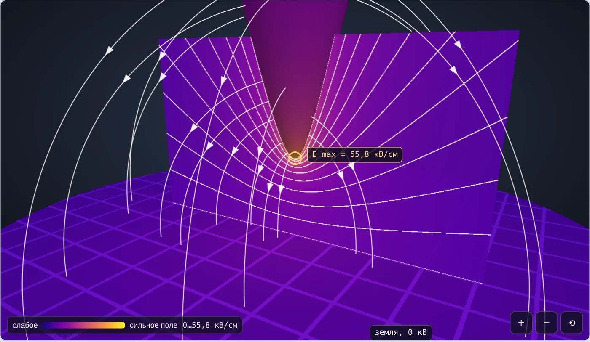
Рис. 6. Острие — плоскость, r = 0,5 см, d = 10 см, U = 60 кВ: эквипотенциали сгущаются у вершины, Emax = 55,8 кВ/см
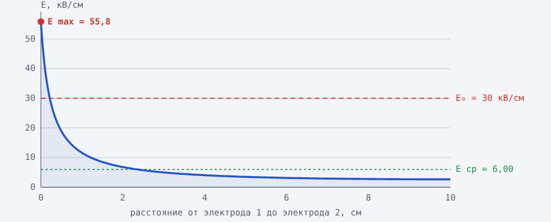
Рис. 7. Напряжённость вдоль оси острие — плоскость: почти всё напряжение приходится на малую область у вершины
5.4. Провод над землёй
Провод воздушной линии радиусом r на высоте h = r + d над землёй — система «цилиндр — плоскость». Методом зеркальных изображений (зеркальный провод под землёй с противоположным зарядом) получают
(12)
Например, для линии 220 кВ (фазное амплитудное напряжение 180 кВ), r = 1,2 см, h = 10 м: Emax ≈ 20 кВ/см. Для 500 кВ с тем же проводом получилось бы около 46 кВ/см — выше прочности воздуха, поэтому на линиях 330 кВ и выше фазу расщепляют на несколько проводов (задача 5 практического занятия).
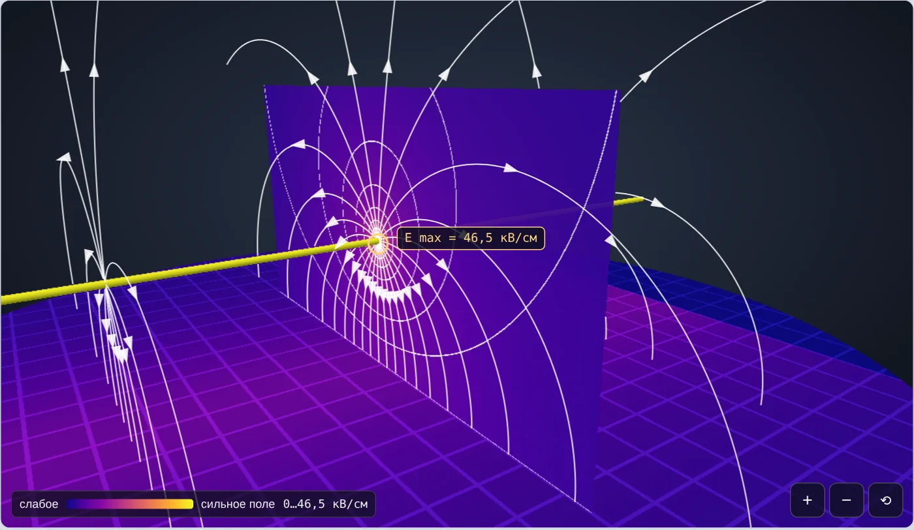
Рис. 8. Провод над землёй, r = 0,5 см, d = 20 см, U = 100 кВ: Emax = 46,5 кВ/см, kн = 9,3
5.5. Коаксиальные цилиндры (кабель)
В кабеле жила радиусом r и экран радиусом R = r + d расположены на одной оси. Поле радиальное, его напряжённость на расстоянии ρ от оси
(13)
Наибольшая напряжённость — у поверхности жилы, наименьшая — у экрана; отношение равно R/r. При заданном внешнем радиусе R напряжённость у жилы минимальна, если
(14)
Слишком тонкая жила — сильное поле из-за малого радиуса кривизны; слишком толстая — тонкий слой изоляции. Оптимум (14) используется при проектировании кабелей и вводов.
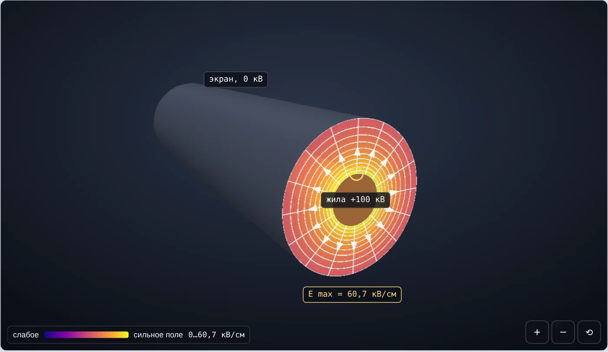
Рис. 9. Кабель: r = 1,5 см, d = 3 см, U = 100 кВ. У жилы Emax = 60,7 кВ/см, у экрана 20,2 кВ/см
5.6. Сводка расчётных формул
| Система | Emax | kн (U сокращается) |
|---|---|---|
| Плоскость — плоскость | U/d | 1 |
| Шар — плоскость | 0,9·U·(r + d)/(r·d) | 0,9·(r + d)/r |
| Шар — шар (±U/2) | 0,9·(U/2)·(r + d/2)/(r·d/2) | 0,9·(r + d/2)/r |
| Острие — плоскость | 2U/(r·ln(4d/r)) | 2d/(r·ln(4d/r)) |
| Провод над землёй, h = r + d | U/(r·ln(2h/r)) | d/(r·ln(2h/r)) |
| Коаксиальные цилиндры, R = r + d | U/(r·ln(R/r)) | d/(r·ln(R/r)) |
6. Влияние заземления и полярности
6.1. Схема подключения второго электрода
Заземление — соединение электрода с землёй; его потенциал становится равным нулю. В реальной установке «земля» — это не только заземлённый электрод, но и пол, стены, корпуса оборудования. Поэтому одно и то же напряжение между электродами при разных схемах подключения создаёт разное поле.
Рассмотрим два одинаковых шара r = 5 см с промежутком d = 10 см и напряжением 100 кВ между ними (результаты 3D-модели):
| Схема подключения | Потенциалы шаров | E у шара 1, кВ/см | E у шара 2, кВ/см |
|---|---|---|---|
| Симметричное питание ±U/2 | +50 / −50 кВ | 17,7 | 17,7 |
| Шар 2 заземлён | +100 / 0 кВ | 23,4 | 12,0 |
| Шар 2 не подключён (плавающий) | +100 / +25,1 кВ | 20,4 | 6,1 |
При заземлении одного шара наибольшая напряжённость выросла на 32 %: силовые линии от шара под напряжением идут не только ко второму шару, но и к окружающей «земле», и шар 2 уже не уравновешивает поле симметрично. Поэтому таблицы пробивных напряжений шаровых разрядников (стандарт IEC 60052) составлены для определённой схемы — с одним заземлённым шаром.
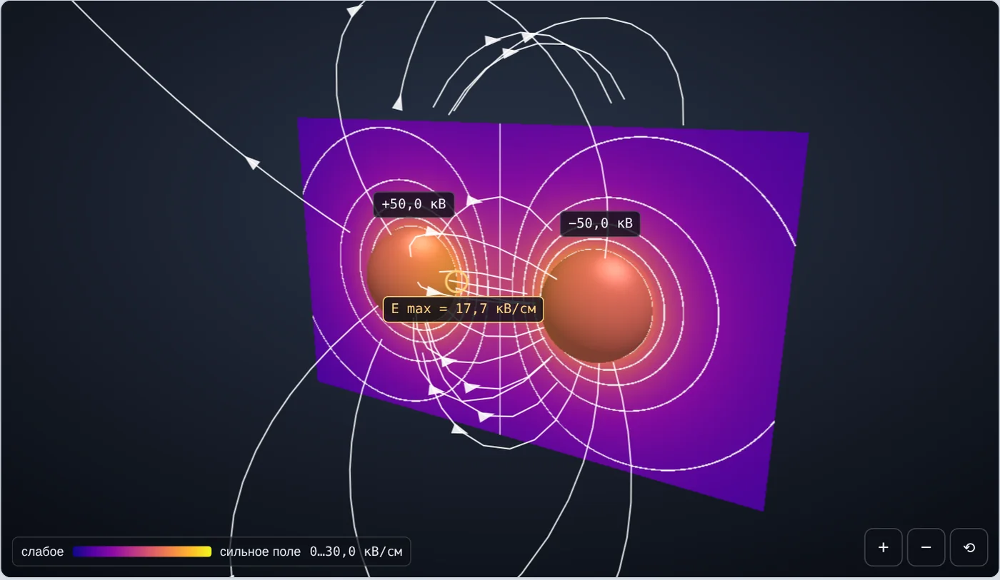
Рис. 10. Шар — шар, симметричное питание ±50 кВ: картина симметрична, Emax = 17,7 кВ/см у обоих шаров
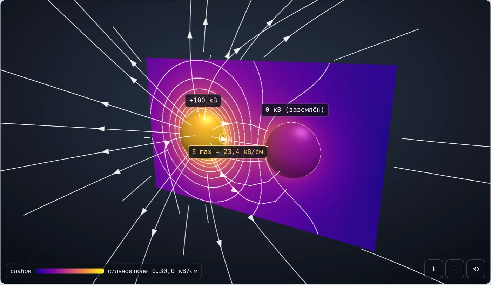
Рис. 11. Шар 2 заземлён, шар 1 под напряжением 100 кВ: Emax = 23,4 кВ/см, картина несимметрична
6.2. Плавающие электроды
Плавающий электрод — металлическая часть, ни к чему не подключённая. Её суммарный заряд равен нулю, но в поле соседнего электрода на ней разделяются заряды, и она приобретает промежуточный потенциал. В примере выше незаземлённый шар принял потенциал около 25 кВ — четверть приложенного напряжения. Прикосновение к такой детали смертельно опасно. Отсюда правило техники безопасности: все металлические части в зоне высокого напряжения заземляют, а перед работой на отключённой установке на неё накладывают заземление.
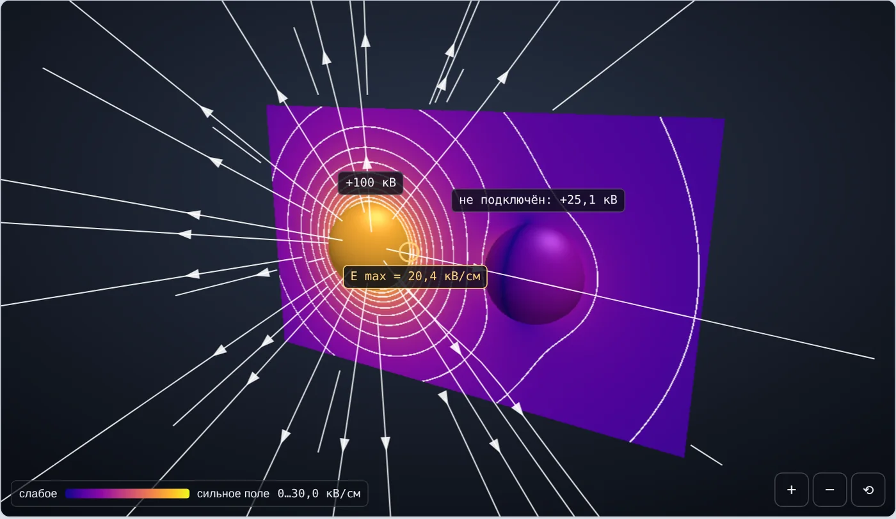
Рис. 12. Шар 2 не подключён: он приобрёл потенциал +25,1 кВ, хотя ни к чему не присоединён
6.3. Полярность
При смене знака напряжения на электроде картина электростатического поля не меняется: те же эквипотенциали, та же величина Emax, меняется только направление силовых линий. Однако процессы разряда в резконеоднородном поле при положительной и отрицательной полярности острия существенно различаются (полярный эффект) — это тема следующих лекций.
7. Способы снижения неоднородности поля
Задача конструктора — сделать так, чтобы Emax во всех точках была меньше допустимой напряжённости изоляции с запасом. Основные приёмы:
Увеличение радиуса кривизны: скругление кромок шин, зачистка заусенцев, применение шаровых наконечников на выводах.
Экраны: экранные (антикоронные) кольца на гирляндах изоляторов и арматуре сверхвысокого напряжения, тороидальные экраны на испытательных установках.
Расщепление проводов воздушных линий 330 кВ и выше: пучок проводов работает как провод большого эквивалентного радиуса.
Оптимизация размеров: выбор радиуса жилы кабеля r ≈ R/e, выбор расстояний.
Профилирование электродов (профиль Роговского) для получения однородного поля в испытательных ячейках.
Заземление и выравнивание потенциалов: устранение плавающих металлических частей.
7.1. Условие отсутствия ионизации воздуха
Электрическая прочность воздуха в однородном поле при нормальных условиях (20 °C, 101,3 кПа) для промежутков порядка 1 см составляет примерно E0 ≈ 30 кВ/см (амплитудное значение). В неоднородном поле ионизация начинается у электрода с малым радиусом кривизны, как только там
(15)
Условие (15) — первая инженерная проверка конструкции. Точное значение напряжённости начала ионизации зависит от радиуса электрода, давления и температуры воздуха и будет уточнено при изучении короны.
8. Демонстрационные опыты на модели «Электроды 3D»
Модель рассчитывает поле точно: плоскости, кабель, провод над землёй и острие — по аналитическим решениям, шары — методом зеркальных изображений. Сцену можно вращать мышью, приближать колесом или кнопками. Слои включаются галочками над сценой: цветной разрез (величина E), эквипотенциали, силовые линии, свечение (области сильного поля), цвет поверхности электродов. Щелчок по разрезу ставит зонд — показываются E и φ в точке. Справа выводятся расчёт по шагам и график E вдоль оси.
Опыт 1. Однородное поле
Настройка: Плоскость — плоскость; U = 50 кВ; d = 2 см.
Включите разрез и эквипотенциали. Убедитесь, что цвет разреза одинаков, а эквипотенциали равноотстоят.
Поставьте зонд в несколько точек промежутка — E везде 25 кВ/см.
Увеличьте U до 60 кВ. E = 30 кВ/см = E0: это напряжение пробоя воздушного промежутка 2 см.
Уменьшите d вдвое — E удвоится.
Ожидаемый результат: E = U/d, kн = 1; в однородном поле Emax = Eср.
Опыт 2. Радиус кривизны
Настройка: Шар — плоскость; U = 100 кВ; d = 10 см; r изменяется от 20 до 0,5 см (кнопка «Настроить» в блоке «Попробуйте сами»).
Запишите Eср, Emax и kн при r = 20; 5; 2; 0,5 см.
Сравните график E вдоль оси: при малом r кривая становится «пиком» у шара.
Сравните результат приближённой формулы и точного расчёта (шаг 3 расчёта).
Ожидаемый результат: Eср = 10 кВ/см не меняется; Emax = 13,6 → 26,8 → 55,9 → 205 кВ/см. Чем меньше r, тем сильнее поле у поверхности.
Опыт 3. Острие
Настройка: Острие — плоскость; U = 60 кВ; d = 10 см; r = 0,5 см.
Включите «Свечение» и выключите разрез: дымка видна только у вершины.
Найдите зондом точку, где E падает до Eср.
Уменьшите r до 0,05 см и увеличьте до 2 см; запишите kн.
Ожидаемый результат: Поле резконеоднородное (kн ≈ 9), сосредоточено у вершины; при r = 0,5 см Emax = 55,8 кВ/см > E0 — у острия возникнет корона, хотя Eср всего 6 кВ/см.
Опыт 4. Заземление второго электрода
Настройка: Шар — шар; r = 5 см; d = 10 см; U = 100 кВ.
Переключайте «Подключение второго электрода»: источник ±U/2 — шар 2 заземлён — шар 2 не подключён.
Для каждой схемы запишите E у обоих шаров и потенциал шара 2.
Объясните, почему при одном и том же напряжении Emax разная.
Ожидаемый результат: 17,7 / 23,4 / 20,4 кВ/см у шара 1; плавающий шар принимает потенциал ≈ 25 кВ.
Опыт 5. Провод и кабель
Настройка: Провод над землёй (r = 0,5 см; d = 20 см; U = 100 кВ), затем кабель (r = 1,5 см; d = 3 см; U = 100 кВ).
Для провода сравните Emax с E0; увеличьте r до 2 см.
Для кабеля запишите E у жилы и у экрана, проверьте отношение R/r.
При постоянном R = r + d = 4,5 см подберите r, при котором Emax минимальна.
Ожидаемый результат: Провод: 46,5 кВ/см — корона; при r = 2 см поле падает ниже E0. Кабель: минимум Emax при r ≈ R/e ≈ 1,66 см.
Опыт 6. Полярность
Настройка: Шар — плоскость, U = 100 кВ; переключите полярность «+» / «−».
Сравните картину разреза, Emax и направление стрелок силовых линий.
Ожидаемый результат: Величина поля и эквипотенциали одинаковы; изменилось только направление E.
Результаты опыта 2 удобно свести в таблицу:
| r, см | Eср, кВ/см | Emax (формула), кВ/см | Emax (модель), кВ/см | kн |
|---|---|---|---|---|
| 20 | 10 | 13,5 | 13,6 | 1,36 |
| 5 | 10 | 27,0 | 26,8 | 2,68 |
| 2 | 10 | 54,0 | 55,9 | 5,59 |
| 0,5 | 10 | 189 | 205 | 20,5 |
9. Выводы
Электрическая прочность изоляции определяется наибольшей напряжённостью Emax, а не средней U/d.
Степень неоднородности поля характеризуется коэффициентом kн = Emax/Eср, который зависит только от геометрии электродов.
Наибольшая напряжённость возникает у электрода с наименьшим радиусом кривизны; уменьшение радиуса резко усиливает поле.
Схема подключения влияет на поле: заземление одного из электродов делает поле несимметричным и усиливает его у электрода под напряжением; незаземлённые детали приобретают опасный потенциал.
Если Emax > E0 ≈ 30 кВ/см, у электрода начинается ионизация воздуха. Снизить Emax можно увеличением радиусов кривизны, экранами, расщеплением проводов, оптимизацией размеров.
10. Контрольные вопросы
Дайте определение напряжённости электрического поля. В каких единицах её выражают в технике высоких напряжений?
Как связаны напряжённость и потенциал? Что означает площадь под графиком E(x) вдоль оси промежутка?
Какое поле называют однородным? Приведите пример системы электродов.
Что такое коэффициент неоднородности? Почему он не зависит от напряжения?
Почему у острия поле сильнее, чем у шара при том же напряжении и расстоянии?
Запишите формулу Emax для систем шар — плоскость, острие — плоскость, провод над землёй, кабель.
При каком радиусе жилы напряжённость в кабеле минимальна? Почему существует оптимум?
Как изменится поле двух шаров, если вместо симметричного питания один шар заземлить?
Почему опасна незаземлённая металлическая деталь вблизи электрода под напряжением?
Меняется ли картина электростатического поля при смене полярности?
Назовите способы уменьшения неоднородности поля в высоковольтных конструкциях.
При каком условии у электрода начинается ионизация воздуха?
Литература
Важов В. Ф., Лавринович В. А. Техника высоких напряжений : учебник. — Томск : Изд-во ТПУ.
Базуткин В. В., Ларионов В. П., Пинталь Ю. С. Техника высоких напряжений: изоляция и перенапряжения в электрических системах. — М. : Энергоатомиздат, 1986.
Разевиг Д. В. Техника высоких напряжений. — М. : Энергия, 1976.
IEC 60052. Voltage measurement by means of standard air gaps (sphere gaps, one sphere earthed).